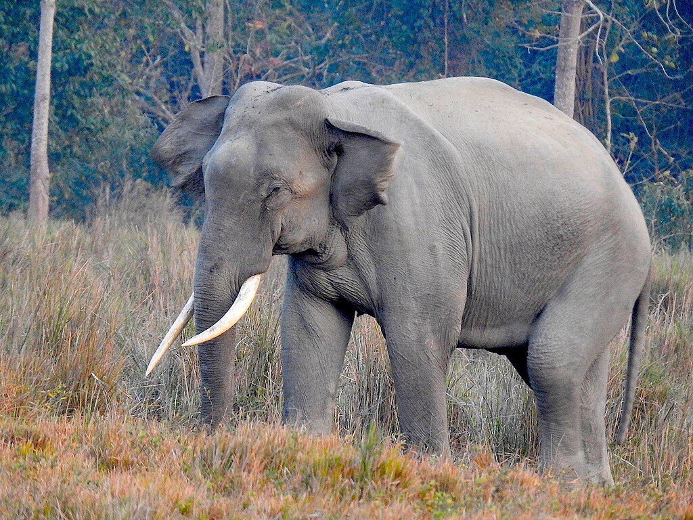

Elephantidae is a family of large, herbivorous proboscidean mammals collectively called elephants and mammoths.
These are large terrestrial mammals with a snout modified into a trunk and teeth modified into tusks. Most
genera and species in the family are extinct. Only two genera, Loxodonta (African elephants) and Elephas (Asian
elephants), are living.
The family was first described by John Edward Gray in 1821,[5] and later assigned to taxonomic ranks within the
order Proboscidea. Elephantidae has been revised by various authors to include or exclude other extinct
proboscidean genera.
